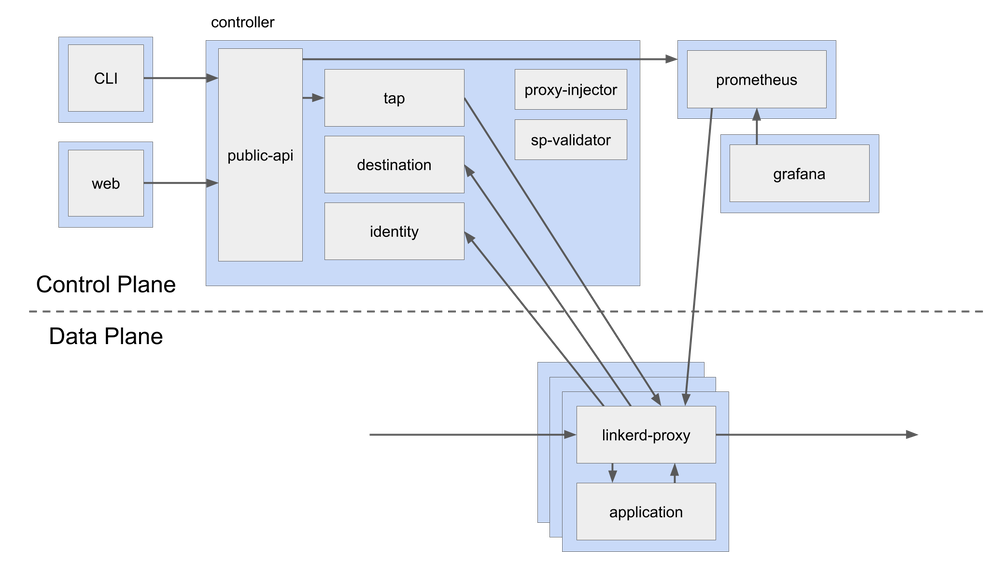
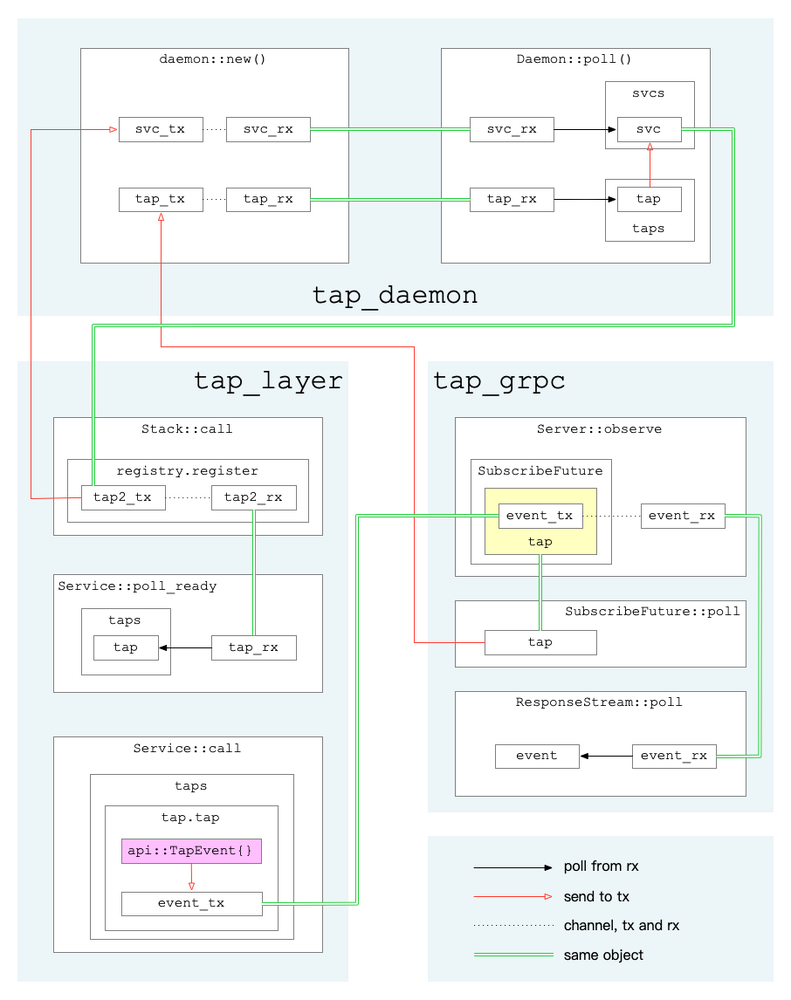

作者: 哗啦啦 mesh团队，热衷于kubernetes、devops、apollo、istio、linkerd、openstack、calico 等领域技术。
概述
Linkerd2由控制平面和数据平面组成：
-
控制平面是在一个专门的Kubernetes命名空间（默认是linkerd）中运行的一组服务，这些服务共同实现了聚合遥测数据、提供一组面向用户的API、向数据平面提供控制指令等功能。 -
数据平面由一组用Rust编写的轻量级代理组成，它们安装在服务的每个pod中。它通过initContainer配置iptables来接管Pod的所有出入流量。它对服务毫无侵入，服务本身不需要修改任何代码，甚至可以将它添加到正在运行的服务中。
以下是官方的架构示意图：

tap是Linkerd2的一个非常有特色的功能，它可以随时抓取某资源的实时流量。有效的利用该功能可以非常方便的监控服务的请求流量情况，协助调试服务。
tap相关的功能组件如下：
- web/CLI: 发起tap请求，展示tap监控结果
- tap: 将来自web/CLI的tap请求转为gRPC请求并发至proxy组件，将proxy回复的tap事件回复给web/CLI
- proxy: 处理tap请求，从经过的request/response数据中获取需要的信息，组成tap事件上报
前两者逻辑相对简单，此处主要关注proxy与tap组件交互相关的一些逻辑，简单分析proxy内部的运行逻辑。
注：本文基于
Linkerd2stable-2.6.0版本，linkerd-proxyv2.76.0版本。
初始化
首先是初始化，在build_proxy_task中：
let (tap_layer, tap_grpc, tap_daemon) = tap::new();
进入tap::new()：
let (daemon, register, subscribe) = daemon::new();
let layer = Layer::new(register);
let server = Server::new(subscribe);
(layer, server, daemon)
此处创建了如下3个对象：
tap_layer用于后续的inbound和outbound逻辑，及后续请求处理tap_grpc用于TapServer创建，处理tap组件的grpc请求tap_daemon则作为任务正常运行，负责黏合layer与grpc
下面分别介绍。
tap_daemon
进入daemon::new()：
let (svc_tx, svc_rx) = mpsc::channel(super::REGISTER_CHANNEL_CAPACITY);
let (tap_tx, tap_rx) = mpsc::channel(super::TAP_CAPACITY);
let daemon = Daemon {
svc_rx,
svcs: Vec::default(),
tap_rx,
taps: Vec::default(),
};
(daemon, Register(svc_tx), Subscribe(tap_tx))
注意此处分别创建svc通道和tap通道，并且将两通道的接收端都存于tap_daemon中，然后将svc的发送端定义为新类型Register的实例，将tap的发送端定义为新类型Subscribe的实例。
在主逻辑中，通过tokio框架执行daemon任务：
tokio::spawn(tap_daemon.map_err(|_| ()).in_current_span());
在Daemon::poll中（见linkerd2-proxy/linkerd/app/core/src/tap/daemon.rs:60，保留骨干）：
// 只保留未完成的tap
self.taps.retain(|t| t.can_tap_more());
for idx in (0..self.svcs.len()).rev() {
// 剔除状态不对的svc
if self.svcs[idx].poll_ready().is_err() {
self.svcs.swap_remove(idx);
}
}
// 获取svc（即tap_layer中创建的 tap2_tx）
while let Ok(Async::Ready(Some(mut svc))) = self.svc_rx.poll() {
for tap in &self.taps {
// 将tap发至tap2_tx
let err = svc.try_send(tap.clone()).err();
}
if !dropped {
// 保存tap2_tx
self.svcs.push(svc);
}
}
// 获取打包的tap及一个一次性的信号通知通道ack
while let Ok(Async::Ready(Some((tap, ack)))) = self.tap_rx.poll() {
for idx in (0..self.svcs.len()).rev() {
// 将tap发至tap2_tx
let err = self.svcs[idx].try_send(tap.clone()).err();
if err.map(|e| e.is_disconnected()).unwrap_or(false) {
// 报错就干掉这个tap2_tx
self.svcs.swap_remove(idx);
}
}
// 保存tap
self.taps.push(tap);
// 发送信号，通知grpc线程，tap已就绪
let _ = ack.send(());
}
// 标记任务未完成，会放回队列等待下一次执行
Ok(Async::NotReady)
这段逻辑主要将grpc那边来的tap送到layer，从而将前面的layer和grpc部分的逻辑串了起来。
tap_layer
layer相关逻辑主要在初始化和后续实际处理请求那。其创建会用到刚才生成的Register的实例，并用于之后的Stack::call（见linkerd2-proxy/linkerd/app/core/src/tap/service.rs:96）中：
let inspect = target.clone();
let inner = self.inner.call(target);
let tap_rx = self.registry.register();
MakeFuture {
inner,
next: Some((tap_rx, inspect)),
}
在registry.register()中（见linkerd2-proxy/linkerd/app/core/src/tap/daemon.rs:148）：
// 再创建一个通道，将其命名为：tap2_tx, tap2_rx
let (tx, rx) = mpsc::channel(super::TAP_CAPACITY);
// 将tap2_tx塞入最开始的svc_tx
if let Err(_) = self.0.try_send(tx) {
debug!("failed to register service");
}
rx
在后续生成的Service中，首先看poll_ready（见linkerd2-proxy/linkerd/app/core/src/tap/service.rs:150）：
// 此处的tap_rx实际上是tap2_rx.
// 从该通道取出所有tap，存到self.taps
while let Ok(Async::Ready(Some(t))) = self.tap_rx.poll() {
self.taps.push(t);
}
// 只保留还需要继续tap的对象
self.taps.retain(|t| t.can_tap_more());
self.inner.poll_ready()
接着是call（见linkerd2-proxy/linkerd/app/core/src/tap/service.rs:161）：
let mut req_taps = Vec::new();
let mut rsp_taps = Vec::new();
for t in &mut self.taps {
// 对req调用Tap::tap接口，获取请求信息，并生成TapRequestPayload结构和TapResponse结构
if let Some((req_tap, rsp_tap)) = t.tap(&req, &self.inspect) {
req_taps.push(req_tap);
rsp_taps.push(rsp_tap);
}
}
// 将tap请求与原始req请求体合为Payload对象，并替代原始请求体
// 在后续从请求体中获取数据时，调用tap的接口（data/eos/fail）对请求数据进行处理
let req = req.map(move |inner| Payload {
inner,
taps: req_taps,
});
let inner = self.inner.call(req);
ResponseFuture {
inner,
taps: rsp_taps,
}
在ResponseFuture::poll中（见linkerd2-proxy/linkerd/app/core/src/tap/service.rs:200）：
// 实际服务回复的future，调用poll拿到实际response
match self.inner.poll() {
Ok(Async::NotReady) => Ok(Async::NotReady),
Ok(Async::Ready(rsp)) => {
// 对response调用TapResponse::tap获取信息
let taps = self.taps.drain(..).map(|t| t.tap(&rsp)).collect();
let rsp = rsp.map(move |inner| {
let mut body = Payload { inner, taps };
if body.is_end_stream() {
body.eos(None);
}
body
});
Ok(Async::Ready(rsp))
}
Err(e) => {
for tap in self.taps.drain(..) {
tap.fail(&e);
}
Err(e)
}
}
前面这些逻辑，其中出现了2个tap接口，一个是Tap::tap，一个是TapResponse::tap，这俩的核心作用都是从请求或回复数据中获取需要的tap信息，然后发往某个通道，细节下面再讲。
tap_grpc
tap_grpc由Server::new(subscribe)生成，实现了api::server::Tap这个grpc server，响应observe这个method请求。该请求来自Linkerd2的tap组件。
收到请求后：
- 解析请求参数：
limitmatchextract - 生成一个唯一id
base_id - 创建一个用于传递
api::TapEvent事件的通道，用其发送端events_tx构造一个Tap对象 - 调用
subscribe.subscribe(tap)，得到一个SubscribeFuture任务 - 构造任务
ResponseFuture
在任务ResponseFuture的poll中，会先执行SubscribeFuture::poll（见linkerd2-proxy/linkerd/app/core/src/tap/daemon.rs:178）：
loop {
self.0 = match self.0 {
FutState::Subscribe {
ref mut tap,
ref mut tap_tx,
} => {
// 此处的 tap_tx 即为最开始创建的tap通道发送端，待其就绪后再往下走
try_ready!(tap_tx.poll_ready().map_err(|_| super::iface::NoCapacity));
// tap为上面步骤3处构造
let tap = tap.take().expect("tap must be set");
// 构造一个一次性通道
let (tx, rx) = oneshot::channel();
// 将其发送端与tap打包发送到tap通道
tap_tx
.try_send((tap, tx))
.map_err(|_| super::iface::NoCapacity)?;
FutState::Pending(rx)
}
FutState::Pending(ref mut rx) => {
// 从接收端获取到信号，表示所依赖任务执行完毕
return rx.poll().map_err(|_| super::iface::NoCapacity);
}
}
}
SubscribeFuture::poll执行完毕，会接着构造一个ResponseStream流，并包装成grpc结果返回。
在ResponseStream::poll中（见linkerd2-proxy/linkerd/app/core/src/tap/grpc/server.rs:225）：
// 限制判断
self.shared = self.shared.take().and_then(|shared| {
if shared.is_under_limit() {
Some(shared)
} else {
None
}
});
// 从事件通道获取事件并返回给stream流，发给grpc客户端，即tap组件
self.events_rx.poll().or_else(|_| Ok(None.into()))
由此看出，每个grpc请求会对应着一个Tap对象，往Tap.shard.events_tx中发送事件，则该事件会最终发到grpc请求方。
看Tap::tap（见linkerd2-proxy/linkerd/app/core/src/tap/grpc/server.rs:267）：
let shared = self.shared.upgrade()?;
// 判断是否需要tap
if !shared.match_.matches(req, inspect) {
return None;
}
// 省略若干从req中提取事件信息...
// tap事件
let event = api::TapEvent {
event: Some(api::tap_event::Event::Http(api::tap_event::Http {
event: Some(api::tap_event::http::Event::RequestInit(init)),
})),
..base_event.clone()
};
// 发送事件
let mut events_tx = shared.events_tx.clone();
events_tx.try_send(event).ok()?;
let tap = TapTx { id, tx: events_tx };
let req = TapRequestPayload {
tap: tap.clone(),
base_event: base_event.clone(),
};
let rsp = TapResponse {
tap,
base_event,
request_init_at,
extract_headers,
};
Some((req, rsp))
图示

总结
至此，以上3个不同的角色互相合作，实现了：
- Linkerd2的tap组件下发tap请求
- proxy向所有流量请求中插入tap请求
- 抓取到tap数据后，上报至Linkerd2的tap组件